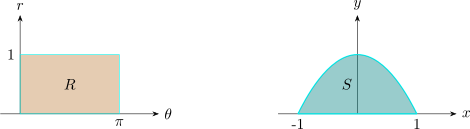

1.15 Functions From \(\mathbb {R}^n\) To \(\mathbb {R}^m\)
Definition 1.15.1. Let \(\Omega \) be a subset of \(\mathbb {R}^n\). A function or mapping \(f\) from \(\Omega \) to \(\mathbb {R}^m\) is a rule that assigns to each point \(\mathbf x = (x_1, \dots , x_n)\) of \(\Omega \) a unique vector \(f(\mathbf x) = (f_1(\mathbf x),\dots ,f_m(\mathbf x))\) in \(\mathbb {R}^m\). The real-valued functions \(f_1,\dots ,f_m\) are the components of \(f\).
Everything so far has had \(m = 1\). The case \(m = n\) includes changes of coordinates, and the case \(n = 1\) includes curves in space, so the definition gathers the earlier ideas together.
Example 1.15.2. The mapping \(f:\mathbb {R}^2 \to \mathbb {R}^2\), \(f(x,y) = (x + 2y,\ -3x + 4y)\), can be written as multiplication by a matrix, \[f(x,y) = \begin {pmatrix} 1 & 2\\ -3 & 4 \end {pmatrix} \begin {pmatrix} x\\ y \end {pmatrix} ,\] and so is represented by the matrix \(\begin {pmatrix} 1 & 2\\ -3 & 4\end {pmatrix}\).
Example 1.15.3. Let \(f: \mathbb {R}^2 \to \mathbb {R}^2\) be defined by \(f(r,\theta ) = (r\cos \theta , r\sin \theta )\), and find the image of the rectangle \[R = \{(r,\theta ) \mid 0\leq r \leq 1,\ 0\leq \theta \leq \pi \} .\]
Solution. Each segment \(r = \text {constant}\) in \(R\) is sent to a semicircle of radius \(r\) in the upper half-plane, and each segment \(\theta = \text {constant}\) to a radius of the unit disc. The image is therefore the closed upper half of the unit disc, \[S = \{(x,y) \mid x^2 + y^2\leq 1,\ y\geq 0\}.\]

The whole edge \(r = 0\) of \(R\) is sent to the single point \((0,0)\), so the mapping is not one-to-one there; this is where its Jacobian, \(r\), vanishes.
A mapping \(f: \mathbb {R}^n \to \mathbb {R}^m\) is a linear transformation if
- 1.
- \(f(\mathbf x+\mathbf y) = f(\mathbf x) + f(\mathbf y)\) for all \(\mathbf x,\mathbf y \in \mathbb {R}^n\), and
- 2.
- \(f(\alpha \mathbf x) = \alpha f(\mathbf x)\) for every scalar \(\alpha \) and every \(\mathbf x \in \mathbb {R}^n\).
Every linear transformation from \(\mathbb {R}^n\) to \(\mathbb {R}^m\) is multiplication by an \(m\times n\) matrix \(A\), \(f(\mathbf x) = A\mathbf x\), as in Example 1.15.2; the columns of \(A\) are the images of the standard basis vectors. The polar mapping is not linear, since \(f(2r,2\theta )\neq 2f(r,\theta )\) in general.
Example 1.15.4. Let \(f,g: \mathbb {R}^3 \to \mathbb {R}^2\) be given by \[f(x,y,z) =\left (\sqrt {1 - x^2 - y^2 -z^2},\ xy^2z^3\right ),\qquad g(x,y,z) = \left (\frac {1}{x + y + z},\ \sqrt {x}\right ).\] Compute \(-4f\) and \(f+g\) and determine their domains.
Solution. The domain of \(f\) is the closed unit ball \(\{(x,y,z) \mid x^2 + y^2 + z^2 \leq 1\}\), and \[-4f =\left (-4\sqrt {1 - x^2 - y^2 -z^2},\ -4 xy^2z^3\right )\] has the same domain. The sum is formed component by component, \[f +g =\left (\sqrt {1 - x^2 - y^2 -z^2} + \frac {1}{x + y + z},\ xy^2z^3 + \sqrt {x}\right ),\] and is defined where both \(f\) and \(g\) are: \[\{ (x,y,z) \mid x^2 + y^2 + z^2 \leq 1,\ x+y+z\neq 0,\ x\geq 0\}.\]
Definition 1.15.5. Let \(f: \mathbb {R}^n \to \mathbb {R}^m\) have components with first partial derivatives at \(\mathbf x\). Its Jacobian matrix at \(\mathbf x\) is the \(m\times n\) matrix \(J_f(\mathbf x) = \left (\frac {\partial f_i}{\partial x_j}(\mathbf x)\right )\). When \(m = n\), the Jacobian of the mapping is the determinant \(\det J_f(\mathbf x)\).
The Jacobian matrix is the matrix of the best linear approximation to \(f\) near \(\mathbf x\): \(f(\mathbf x + \mathbf h)\approx f(\mathbf x) + J_f(\mathbf x)\,\mathbf h\), each row being the tangent-plane approximation of one component.
Definition 1.15.6. Let \(f: \mathbb {R}^n \to \mathbb {R}^n\) have continuous first partial derivatives on an open set \(\Omega \) (written \(f\in C^1(\Omega )\)). Then \(f\) is locally \(C^1\)-invertible on \(\Omega \) if \(f\) is one-to-one on \(\Omega \) and there is a function \(g\in C^1(f(\Omega ))\) such that \[(g\circ f)(\mathbf x) = \mathbf x\ \text {for every}\ \mathbf x\in \Omega ,\qquad (f\circ g)(\mathbf y) = \mathbf y\ \text {for every}\ \mathbf y \in f(\Omega ) ;\] that is, \(g = f^{-1}\) on \(f(\Omega )\).
For a linear transformation \(f(\mathbf x) = A\mathbf x\), the inverse is \(f^{-1}(\mathbf y) = A^{-1}\mathbf y\), which exists exactly when \(\det A\neq 0\). The inverse function theorem of the next subsection says that the same is true locally of any \(C^1\) mapping, with \(A\) replaced by the Jacobian matrix.
Example 1.15.7. Find the Jacobian matrix of \(f(x,y,z) = (x^2 + yz,\ xe^{y},\ \sin (xz))\) at \((1,0,\pi )\), and use it to approximate \(f(1.01, 0.02, \pi )\).
Solution. \[J_f = \begin {pmatrix} 2x & z & y\\ e^y & xe^y & 0\\ z\cos (xz) & 0 & x\cos (xz)\end {pmatrix},\qquad J_f(1,0,\pi ) = \begin {pmatrix} 2 & \pi & 0\\ 1 & 1 & 0\\ -\pi & 0 & -1\end {pmatrix} .\] With \(f(1,0,\pi ) = (1, 1, 0)\) and \(\mathbf h = (0.01, 0.02, 0)\), \[f(1.01,0.02,\pi )\approx (1,1,0) + (0.02 + 0.0628,\ 0.01 + 0.02,\ -0.0314) = (1.0828,\ 1.03,\ -0.0314).\] The exact values are \((1.0829, 1.0304, -0.0314)\) to four decimal places.
Questions on this section
Stuck on something here? Ask below and it stays attached to this topic.